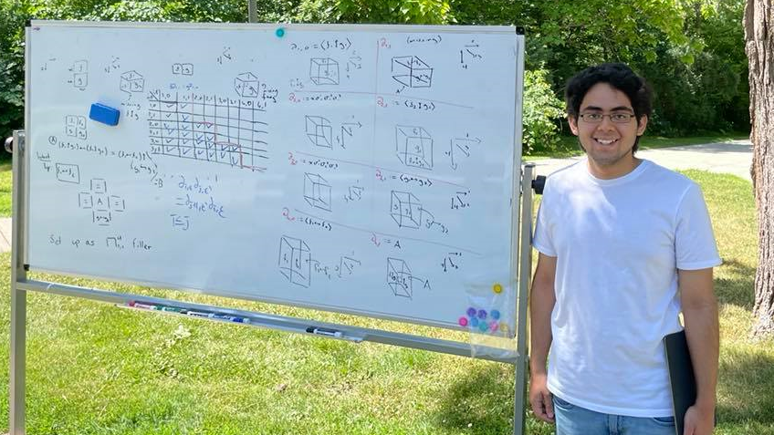

Daniel Carranza
My email: carranza@math.utoronto.ca My CV I am an MSc student in mathematics at the University of Toronto.
I am interested in homotopy theory, category theory, and logic. My most recent project was a construction of the type of two-adjoint equivalences in Homotopy Type Theory, formalized in Lean 3.
Previously, I was an undergradute student in mathematics at Western University under the supervision of Chris Kapulkin.
Research
| Papers |
Cubical setting for discrete homotopy theory, revisited with C. Kapulkin, preprint [arXiv] |
|
Homotopy groups of cubical sets with C. Kapulkin, preprint [arXiv] |
|
|
2-adjoint equivalences in homotopy type theory. with J. Chang, C. Kapulkin, and R. Sandford, Logical Methods in Computer Science 17 (2021), no. 1, Paper No. 3, 9pp. [arXiv] [LMCS] [github] |
|
| Talks |
Formal Verification of Mathematics. Canadian Undergradute Mathematics Conference 2020 (August 20, 2020) [youtube] |
|
Formalizing 2-Adjoint Equivalences in Homotopy Type Theory. Western Homotopy Theory Seminar (August 18, 2020) [youtube] |
Awards and Scholarships
| 2020 |
NSERC Undergradute Student Research Award at Western University. Cubical Methods in Discrete Homotopy Theory |
| 2020 |
NSERC Undergradute Student Research Award at Western University. 2-Adjoint Equivalences in HoTT |
| 2018-2021 | Dean's Honor List. |
Conference Attendance & Extracurricular Activities
| March 2022 | AMS Spring Southeastern Sectional Meeting. University of Virginia. |
| February 2022 | Logic and Higher Structures. Centre International de Rencontres Mathématiques. |
| February 2020 | Higher Categories and Categorification. Research visit. Mathematical Sciences Research Institute. |
| Winter 2020 | Directed Reading Program. Category Theory. Western University. |